| 日付 | 2017年4月23日（日） |
|---|---|
| 山域 | 西上州 |
| メンバー | 家族（妻、長女・6歳、長男・3歳） |
| 山行形態 | 子連れ日帰り |
| アクセス | 車 |
| ルート (Map) | 新高畑橋駐車場 (9:42) - (9:52) 登山口 - (11:18) 笠丸山 (12:15) - (12:45) 地蔵峠 - (13:07) 休憩 (13:17) - (13:55) 新高畑橋駐車場 |
昨年の三ツ岩岳に引き続き、今年もアカヤシオの花を求めて西上州の山を目指す。
今回選んだのは笠丸山。この山もアカヤシオで有名な山だ。
7年前にも一度アカヤシオを求めて登ったことがあるが、
その時は季節外れの雪景色だった。今回の山行はそのリベンジだ。
娘が車に酔って途中で吐いてしまった。最近何故か娘は車に酔いやすい。
下仁田の青岩公園に車を停めて少し休憩する。
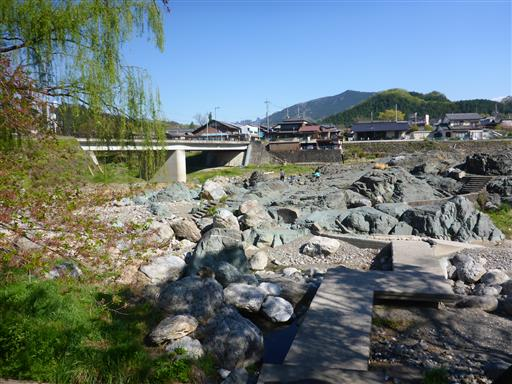
立派な柳の木が立っている。非常に美しい木だ。
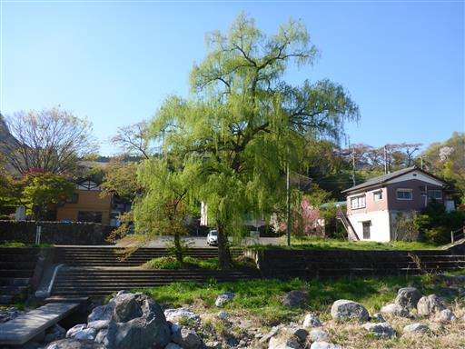
ここは二本の川が合流するところ。水はそこそこきれいそうだが、
上流にもずっと民家が続いているため、あまり川遊びには適していないかもしれない。
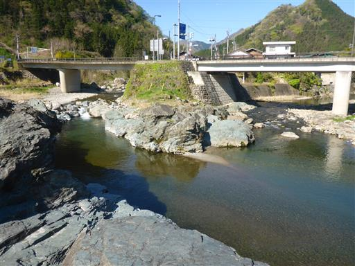
子供たちは岩の上を歩いて適当に遊んでいる。
青みがかった岩がこの公園の名の由来なのだろう。
10分ほど遊んだら車に戻って目的地を目指す。ここからは山道が続く。
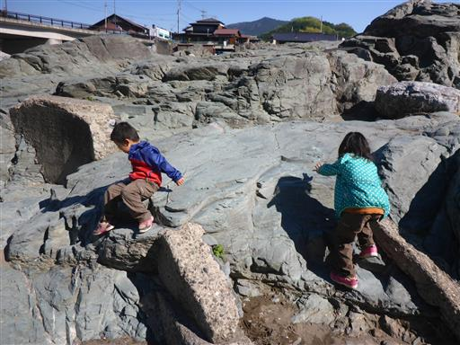
笠丸山の駐車場に到着。標高780m。
南側の林道が通行止めのため、今回は北側から回り込んでのアプローチだ。
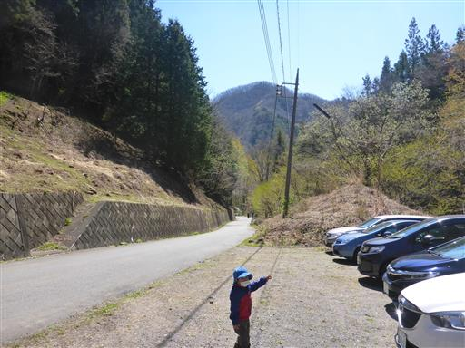
この山は周回ルートをとれるため、どちらの道から登るか迷ったが、
前回同様、右回りルートを選択する。
まずは車道を下って登山口を目指す。
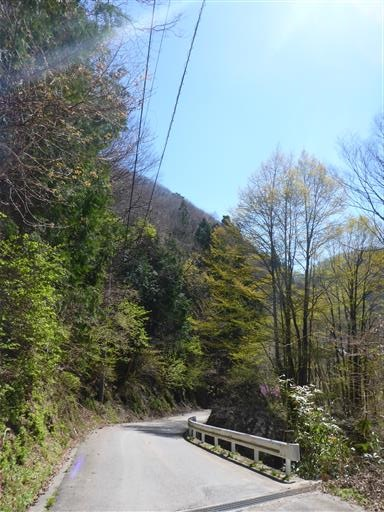
山の斜面はツツジの鮮やかなピンクで染められている。
恐らく植えられたミツバツツジだろう。
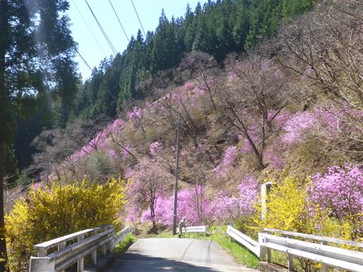
車道の傍を流れる小川。何の変哲もない小川だが美しい景色だ。
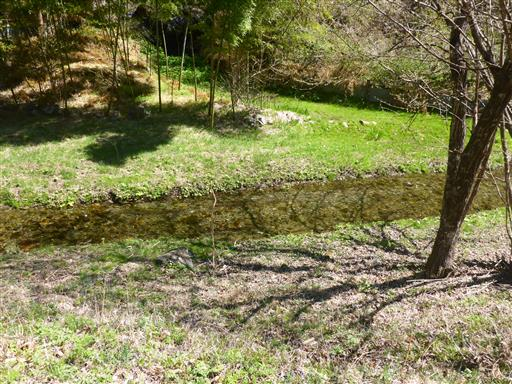
10分ほど歩いて笠丸山登山口に到着する。
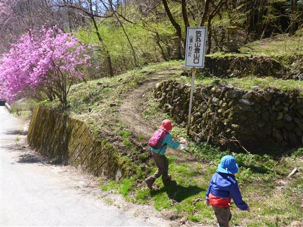
始めは植林地帯の中を登っていく。
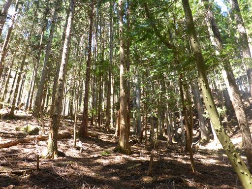
すぐに明るい自然林の尾根道になる。まだ新緑には早いが、薄緑色が美しい。
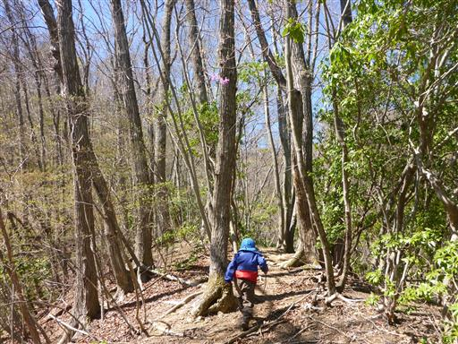
道の真ん中に巨大な糞が落ちている。何の動物だろうか？
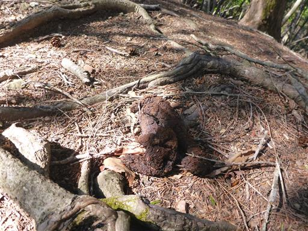
しばらく登るとようやくアカヤシオの花が見えてくる。
今年も大好きなアカヤシオの花に出会えた。
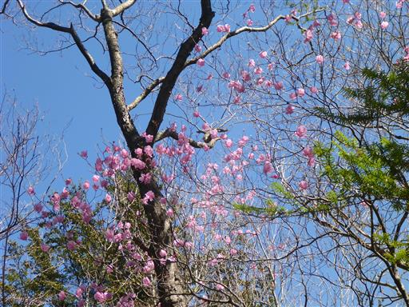
息子はしゃがんでは何かを拾っている。
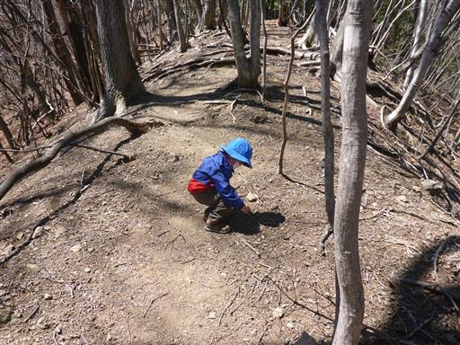
地面に栗がたくさん落ちている。
息子が触っても「痛くない」というので、触ってみると本当にあまり痛くない。
落ちてから大分時間が経っているので、とげの先端が丸くなっているのだろう。
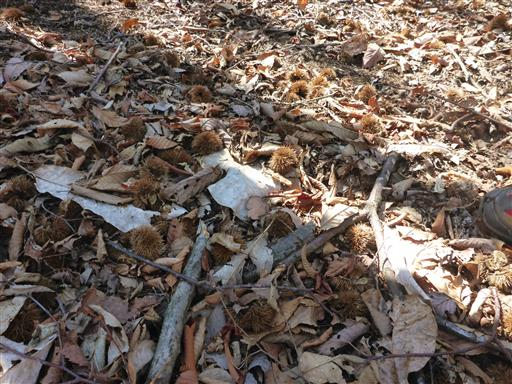
大きな岩を右から迂回する。だんだん登山道が険しくなってきた。
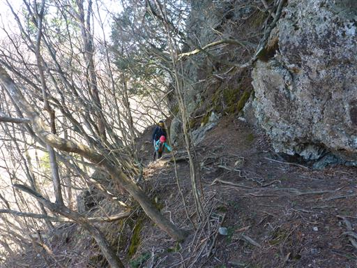
傾斜も急になってくる。木の根やロープに捕まって登っていく。
西上州の山は一筋縄ではいかない。
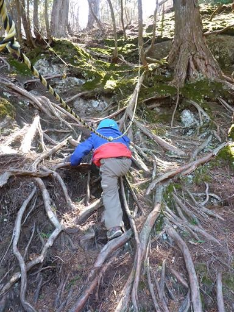
笠丸山東峰に到着。小さな祠が祀られている。

ここからは一角の展望が広がる。
中央に聳えるブロック状の山は、一目でそれと分かる両神山だ。
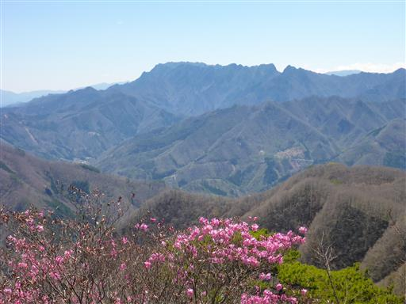
西峰は近いため、休憩せずにそのまま出発する。
東峰と西峰を結ぶ稜線は岩がちな地形の痩せ尾根だ。
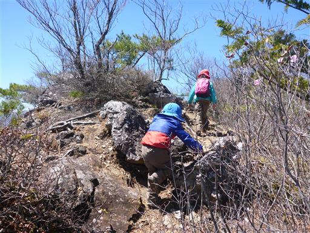
所々アカヤシオが咲いているが、まだ蕾のものも多い。
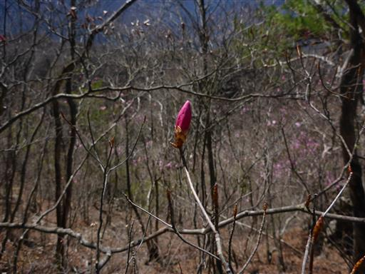
岩尾根をしばらく歩くと笠丸山西峰に到着する。標高1189m。
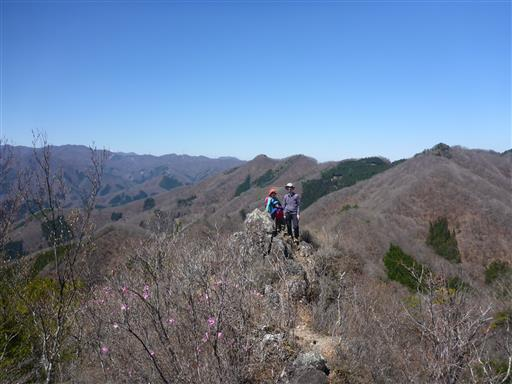
山頂にも多くはないがアカヤシオの花が咲いている。
展望は非常に良く、眼前には西上州の山々が広がっている。
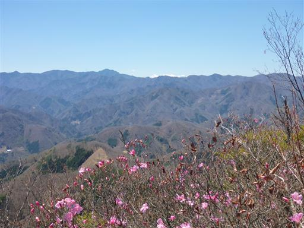
白く輝く八ヶ岳も遠くに頭だけ見えている。
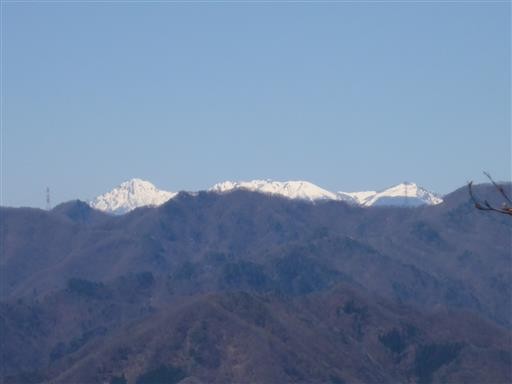
こちらは白砂山など雪に覆われた上信越の山々だ。
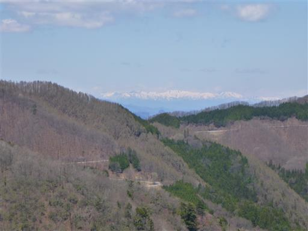
山頂は岩がちな地形で、息子は岩に登って遊んでいる。
山頂部は崖に囲まれているため、常に息子の側に付いている必要があり、あまり落ち着かない。
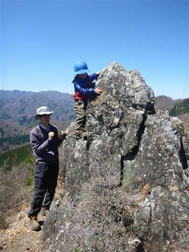
昼食をとったら下山を開始する。
崖に囲まれた道を慎重に下る。
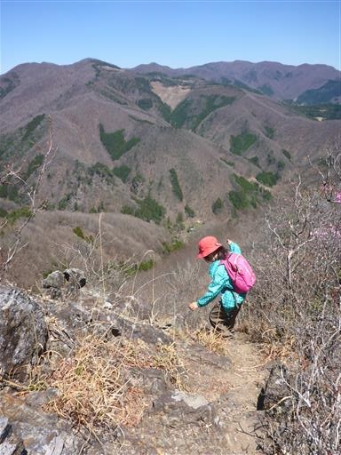
東峰・西峰の鞍部から下山道に入っていく。
いきなりロープを使った急傾斜の下りだ。
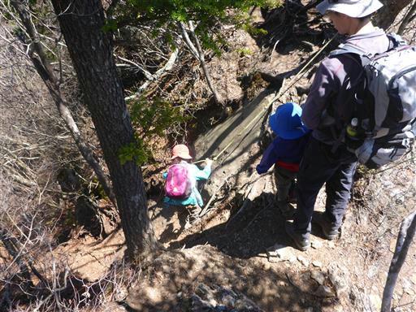
息子にロープをつかませ、補助しながら下っていく。
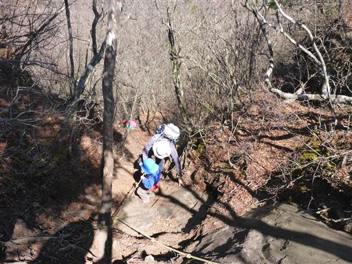
ロープ場を過ぎても急斜面の登山道は続く。
かつて一度歩いた道なのだが、これほど難しい登山道という記憶はなかった。

少しだけ登り返しがある。

ようやく傾斜が緩んで歩きやすい登山道になる。
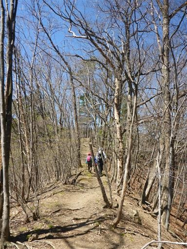
この岩を見て子供たちが「王蟲だ」と言っている。
たしかにそう見えなくはない。
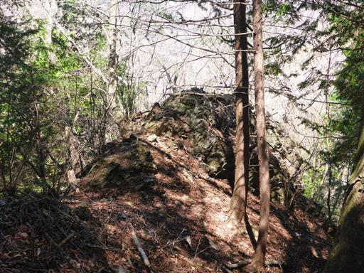
ここからは緩傾斜の歩きやすい道。
しかし道幅は狭く、沢から高い場所を歩く部分もあるため、気は抜けない。
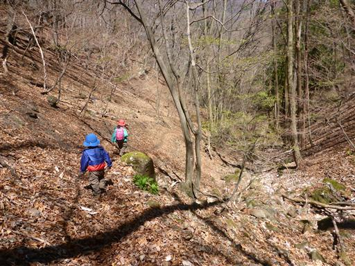
ハシリドコロの花があちらこちらに咲いている。
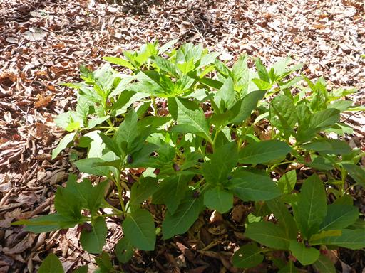
振り返ると日差しを浴びた新緑がまぶしい。
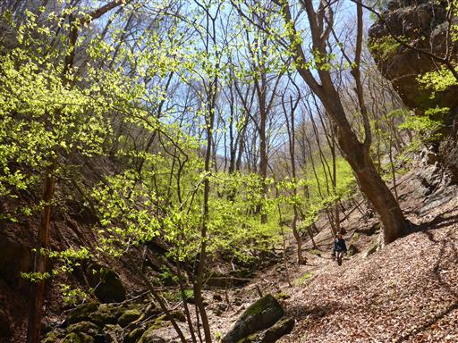
沢に降りられる場所があったので、少し休憩することにする。
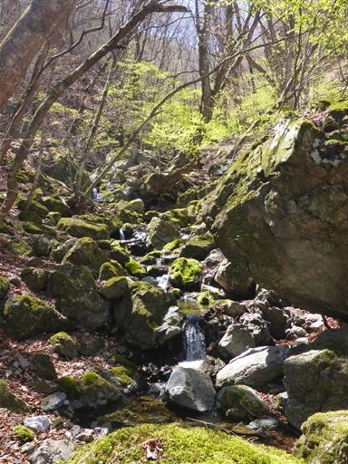
足元に咲いているのはツルネコノメソウ。小さくて可憐な花だ。
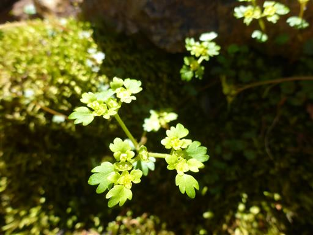
川の中にある石にはツルネコノメソウと苔が生えている。
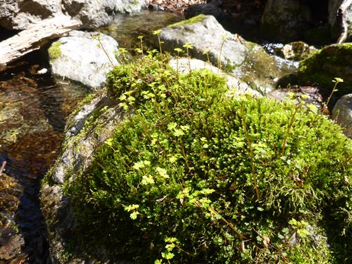
登れそうな岩があったため、少し登ってみる。
上部に抜けられそうだったが落ちるのが怖いので止めておいた。
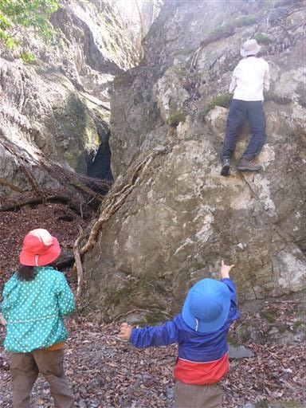
林道の終点に出てくる。土砂が崩れ落ちてきている。
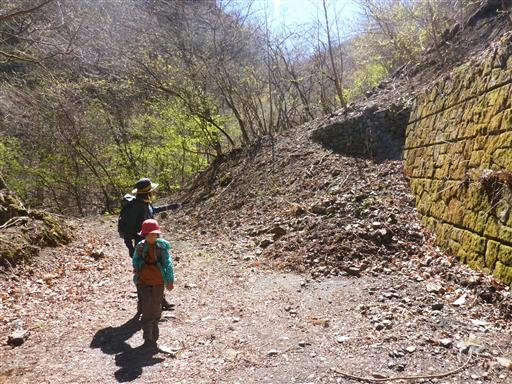
未舗装の林道をダラダラと下っていく。目の前に見えるのは天狗岩だ。
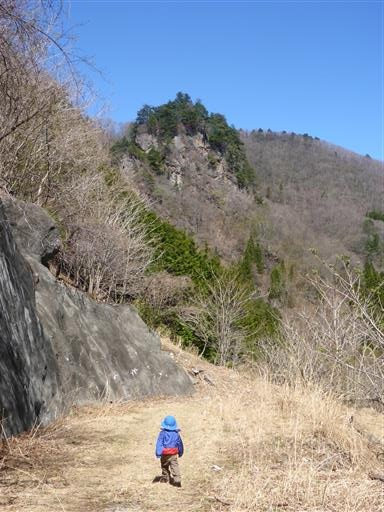
今度は道路の法面で遊びだす。なかなか前に進まない。
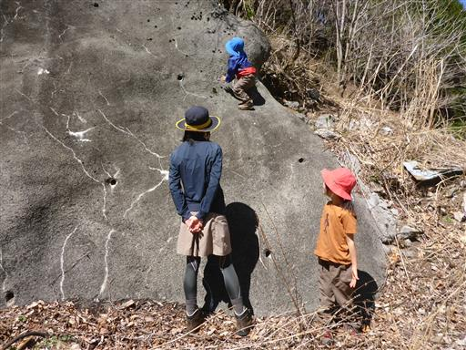
カタクリの花を発見。
群生はしていないが、こんなところに咲いているとは思わなかったため嬉しい気持ちになる。
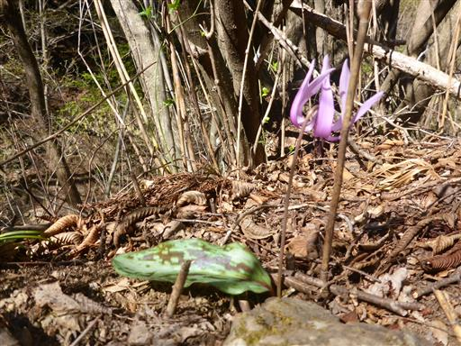
駐車場に戻ってくる。
時期が早すぎたのか、外れ年なのか、思ったほどアカヤシオは咲いていなかったが、
今年も楽しいお花見山行ができた。
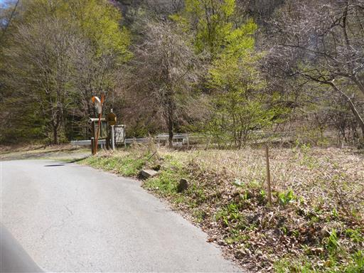